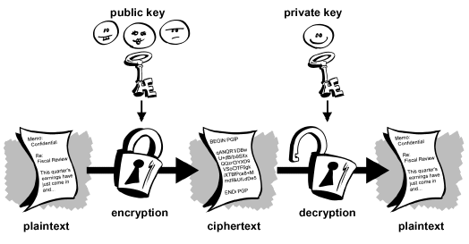
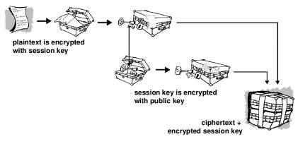
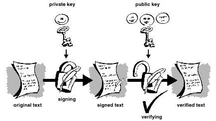
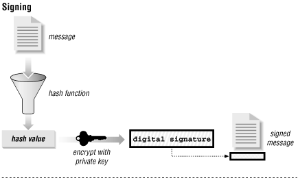
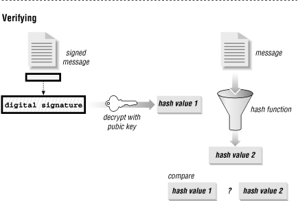

Encryption and GPG Applications
Aaron Toponce
OALUG President
Best viewed with a standards-compliant browser (not IE).
Outline
- Why should I use GPG/OpenPGP?
- A brief history of cryptography.
- Technical aspects of encryption, decryption and signatures.
- Applications of encryption and decryption.
- Applications of signatures.
- Conclusion.
Why should I use GPG/OpenPGP?
- Why worry about my privacy? I have nothing to hide.
- Don't we have to relinquish some degree of privacy?
- I only use encryption when I need it. Only when I have something sensitive.
- I like the idea, but it is too troublesome to use. It isn't streamlined.
Why worry about my privacy?
- Privacy isn't just hiding things, but control, autonomy and integrity.
- You are in control of what you want seen and available to the world.
- It's about the woman researching breast cancer without the fear her employer will drop her coverage.
- It's about being honest without the press being able to twist the truth.
Why worry about my privacy?
- How would you feel if someone was watching your every move, including email, web browsing, chats, etc.?
- One word: Disneyland. Being photographed and sold without your knowledge or permission.
We have to give up a level of security
- A simple thought paradigm in the '50s. Poison the water, so we can learn about cures.
- Sustainable economic development depends on preserving the environment, not destroying it.
I'll use encryption only when I need it.
- If you are being watched, encrypted messages stand out.
- If you always encrypt, no big deal.
- Can you be 100% sure that what you encrypt or protect now, be safe in 40-50 years?
It's just too much trouble.
- Do you lock your home or car? How do you do it?
- What precautions do you take to ensure safety for your children?
- Really, is the extra minute or two really that valuable? What are you losing through this?
- Practice makes perfect.
A Brief History Of Cryptography
- Egyptian hieroglyphs- 2500 BC
- Hebrew Atbash substitution cipher (reversal)- 500 BC
- Caesar's Cipher (fixed shift)- 100 BC
- Simple substitution
- ROT13
- No security
- Captain Crunch decoder ring- (Caesar) 1950s
A Brief History Of Cryptography
- Data Encryption Standard (DES)
- mid-1970s made public (non-secret)
- single key block-cipher algorithm
- submitted by IBM
- blessed by the National Security Agency (NSA)
- shortened 56-bit key strength (24 hours)
- possible NSA back-door
- critics Diffie & Hellman
- obsolete
- inspired public key cryptography
A Brief History Of Cryptography
- Advanced Encryption Standard (AES)
- recent (2001) adoption by National Institute of Standards and Technology (NIST)
- superseded DES
- block cipher cryptography
- 256-bit maximum key size
- side attacks
- NSA support, no backdoor
- first public algorithm for TOP SECRET data
Public Key Cryptography
- Introduced by Whitfield Diffie and Martin Hellman in 1976.
- Previous cryptography was known as symmetric key exchange, or single-key.
- Asymmetric key encryption- two mathematically related keys.
- One key is private, the other public.
Technical Aspects- General
- Key pair cryptography
- Private Key
- Kept secret
- Used for creating digital signatures and decryption
- Parent of the public key
- Public Key
- Handed out to others or uploaded to key servers.
- Used for verifying digital signatures and encryption
- Child of the private key
Technical Aspects- General
- Based on astronomically large prime factors.
- A k-bit key is 2^k. An attacker must generate 2^k keys to find the right one.
- 2^4 is twice as large as 2^3. 2^5 is eight times as large.
- Some large numbers:
- Age of the planet : 2^30 years
- Age of the universe : 2^34 years
- Number of atoms in the planet : 2^170
- Number of atoms in the sun : 2^190
- Number of atoms in the galaxy : 2^223
Technical Aspects- General
- The keys are mathematically related algorithms
- Easy to calculate, but hard to reverse.
- RSA uses the algorithm to create a large integer based on large prime numbers. Finding those primes is difficult.
Technical Aspects- Encryption

Technical Aspects- Encryption

Technical Aspects- Decryption

Technical Aspects- Signatures

Technical Aspects- Signatures

Technical Aspects- Signatures

Q&A
Any comments, questions or rude remarks?